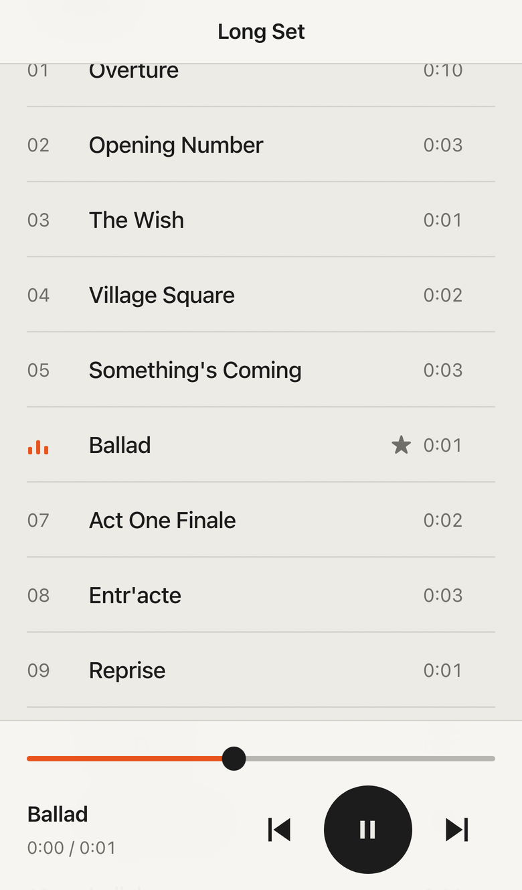
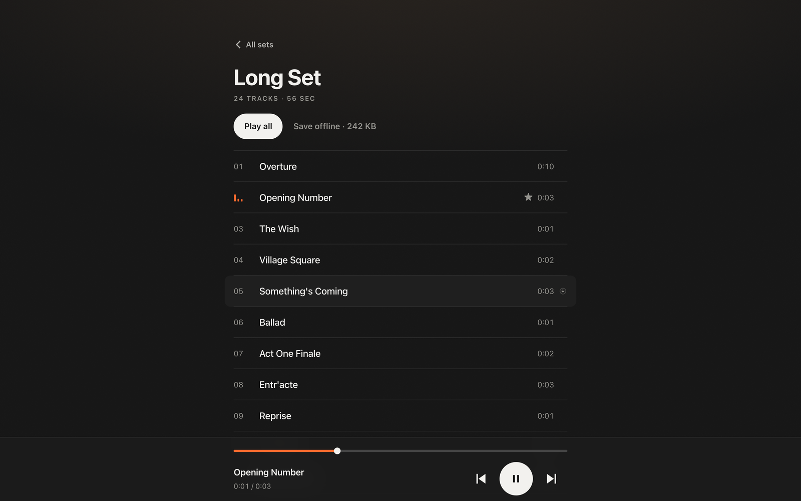

Rehearsal tracks, in the cast's pocket.
A WordPress plugin that turns a site into a small, private music app. Sets of audio, a player that keeps playing while you move around, offline saving, lock-screen controls, notices, and an "Add to Home Screen" flow on iPhone. No accounts. No ads. No algorithm.
Made for the way a cast actually practices.
Tap a link, tap a song, learn your part. Everything else stays out of the way.
Keeps playing
Move between sets, lock the phone, switch apps. The player persists, with lock-screen controls and artwork.
Save offline
Per track or a whole set, with progress on each row. Plays on the bus, in the basement, backstage.
Notices
The cast opts in on their phones. You post "call time moved to 4," they get a notification. New sets announce themselves.
Installable
Add to Home Screen and it opens full screen with its own icon and launch screen, on iPhone and Android.
Private by default
Unindexed, no discoverable people, no referrers, no open APIs. Link previews still work.
Quiet design
One accent. Tabular numerals. Motion only where it carries information, and none of it when you ask for less.
How it works
Sets are posts. Tracks are audio files in the Media Library. The rest is the plugin.
- Add a set. Upload audio to a set in the admin, drop a folder into uploads, or fetch a YouTube playlist with WP-CLI where yt-dlp exists.
- Share one link. The home page lists every set. No accounts, nothing to sign up for.
- They add it to their Home Screen. The app hints once, then gets out of the way.
- Post a notice when something changes. Sets → Notices, and everyone who opted in hears about it.

Install
Requires WordPress 6.5 and PHP 8.1. Fetching from YouTube additionally needs yt-dlp and ffmpeg wherever WP-CLI runs.
wp plugin install https://github.com/josephfusco/callboard/releases/latest/download/callboard.zip --activate
wp callboard fetch 'https://www.youtube.com/playlist?list=…' --name="Spring Show"Or upload the zip under Plugins → Add New. Then Sets → Import to bring in a folder, or Sets → Settings for the tagline, badge, and confetti.
